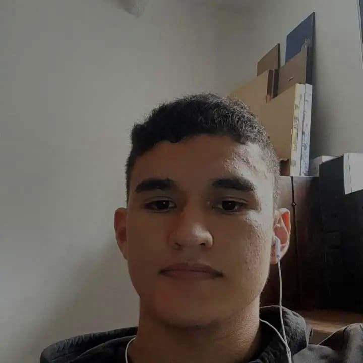
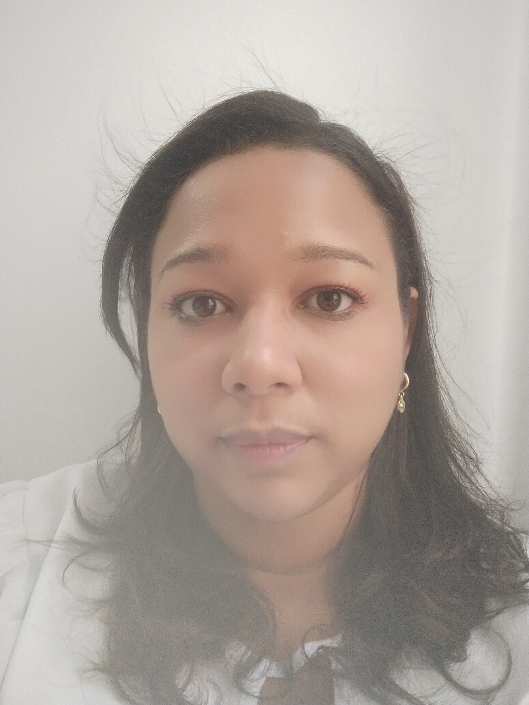

DESCRIPCIÓN DEL PROYECTO
En el grupo 8 enfocamos la página hacia la gastronomía, específicamente la comida de Mar, tales como los mariscos y pescados en sus diferentes presentaciones. La idea surgió debido a que contamos con compañeros de la Costa los cuales tienen un acercamiento a la zona, además de contar con diferentes ideas acerca de este tipo de alimentos, lo cual nos favorecerá y nos hará tener un mejor recibimiento al público del sector. Lo que se buscará con la creación de la página de este restaurante es ampliar el medio para captar, fidelizar clientes, y en ocasiones esto juega un factor decisivo para que un cliente potencial que busque un restaurante para comer o pedir a domicilio nos encuentre, gracias a las técnicas como el posicionamiento SEO o el posicionamiento SEM.
PERFILES GRUPO 8
Alejandro Bedoya Ramos
Jose Alejandro Bedoya Ramos
Edad : 17 años
Ciudad de residencia: Ibague, Tolima
Ocupación: Estudiante de Procesamiento y Digitalización de Datos
Celular: 3213158719
Entusiasta, dedicado y motivado, con capacidad de adaptarme rápidamente ante
retos de cualquier dificultad.
Encargado de pagina de inicio, registro, cierre y bebidas pagina principal
Doris Esther Elles Ramos
Doris Esther Elles Ramos
Edad: 38 años
Municipio de Residencia: Cartagena de Indias, Bolívar
Ocupación: Estudiante en Procesamiento y Digitación de Datos
Celular: 3134174211
Comunicación acertiva, trabajo en equipo, Resiliencia con capacidad al logro.
Encargada de Footer, pagina de ubicación y carrito de compras
Felipe Sánchez Castillo

Manuel Felipe Sánchez Castillo
Edad : 25 años
Municipio de residencia: Cajicá, Cundinamarca
Ocupación: Estudiante de Procesamiento y Digitalización de Datos
Celular: 3138452372
Entusiasta, dedicado y con deseos de asumir mayores responsabilidades.
Profesional y motivado, con capacidad de adaptarse rápidamente ante
retos y ambientes cambiantes.
Encargado de liderar, pagina de presentación, header y pagina de principal comida.